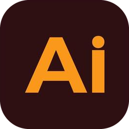
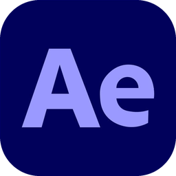
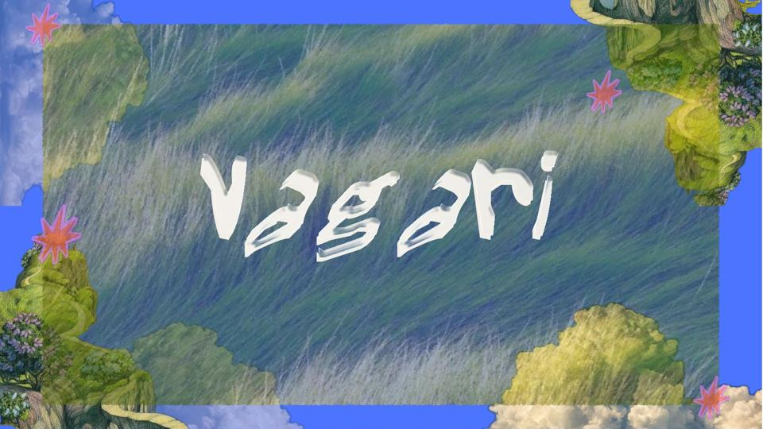
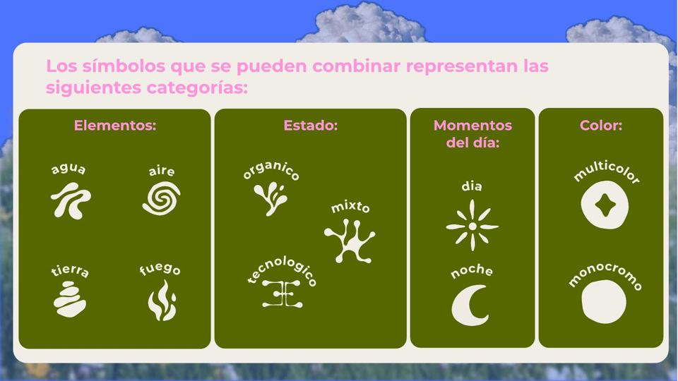
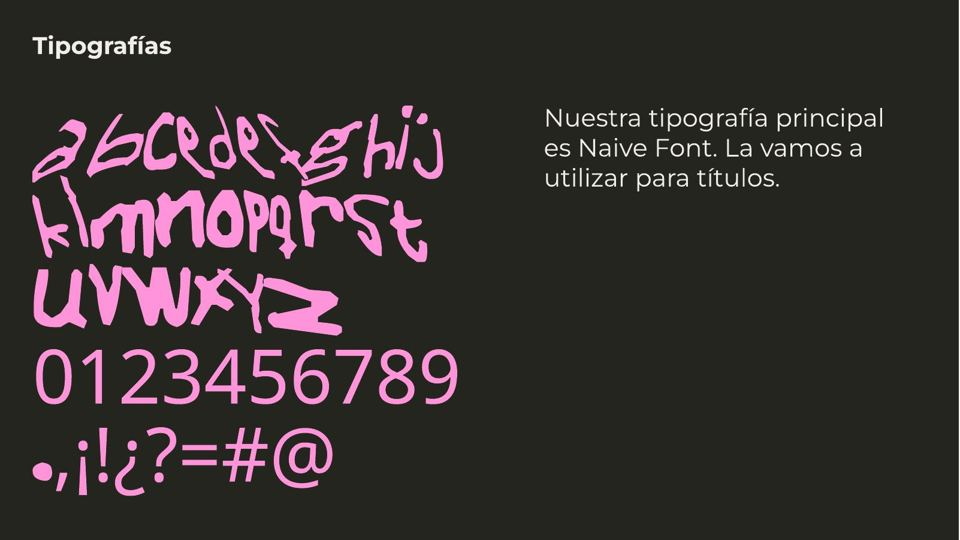
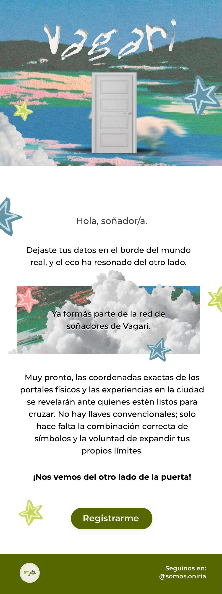

Filo NewsHP 90

UI/UX
Rediseño de la sección de música para descubrir playlists sin vueltas.
N.º 001
Filo News
UI/UX
- Investigación85
- Interfaz90
- Impacto80
Tomás Estévez. Estudiante de Diseño Multimedial en la UNLP: UI/UX, edición de video, motion graphics y animación.
Cargando Game Boy…

Licenciatura en Diseño Multimedial, Facultad de Artes, UNLP — 2023 a la actualidad
 Photoshop
Photoshop Figma
Figma
Illustrator Canva
Canva
After Effects CapCut
CapCutRediseño de la sección de música para descubrir playlists sin vueltas.

Del branding a una instalación física con visuales interactivos.
Ritmo, color y narrativa para contar historias en pantalla.
Piezas verticales con ritmo y mucho impacto.
Movimiento con estilo propio y una técnica cada vez más fina.
Visuales que responden al público y se proyectan en vivo.
Rediseño de la sección de música de Filo News, enfocado en que los usuarios descubran playlists sin vueltas y con alto impacto visual.
Nació a partir de un estudio de usuarios. Adapté la interfaz para mobile y desktop, con una arquitectura y jerarquías pensadas para conectar al público joven con las tendencias musicales de forma directa y dinámica.
Un universo onírico que nació como branding y terminó convertido en una instalación física con visuales interactivos.
Vagari es el portal de Oniria, un universo donde el valor está en los sueños. Sus habitantes son nómades que viajan entre mundos soñados: acceden a un prado onírico donde los espera una puerta cerrada en medio del pastizal. No tiene llave convencional: se abre combinando símbolos. El proyecto avanzó en tres etapas.
Definimos el nombre, la narrativa y la personalidad de Vagari (el arquetipo del explorador), con un tono de voz misterioso, enigmático y dinámico. Armamos la identidad visual (paleta de verde, rosa, azul, negro y blanco; Naive Font para títulos y Montserrat para textos), un sistema de símbolos para configurar la puerta y una experiencia pensada para los cuatro sentidos: paisaje sonoro, aromas vegetales, texturas y sabores. Todo quedó reunido en el manual de marca.




Newsletter: quienes dejaban sus datos al comprar un llavero recibían esta bienvenida, escrita con el tono de la marca.
Llevamos el universo fuera de la pantalla: llaveros y mapas con símbolos, búsqueda de pistas por la ciudad y una pieza de realidad aumentada donde los conceptos del branding se materializan.
El cierre del proyecto: una instalación física donde el universo se podía recorrer. Hice con TouchDesigner los visuales interactivos que respondían al público y los visuales que se proyectaron en una tele dentro de la misma instalación.